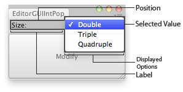

| position | 屏幕上用于字段的矩形。 |
| label | （可选）字段前的标签。 |
| selectedValue | 该字段显示的选项的值。 |
| displayedOptions | 供用户选择的所示选项的数组。 |
| optionValues | 包含每个选项值的数组。假设 optionValues 是 selectedValue 到 displayedOptions 的直接映射。 |
| style | 可选 GUIStyle。 |
int 用户所选选项的值。
Makes an integer popup selection field.
以参数形式获取当前所选的整数，并返回用户选择的整数。

Int Popup in an Editor Window.
using UnityEngine; using UnityEditor;
// Multiplies the scale of the selected transform.
class EditorGUIIntPopup : EditorWindow { int selectedSize = 1; string[] names = { "Double", "Triple", "Quadruple" }; int[] sizes = { 2, 3, 4 };
[MenuItem("Examples/Editor GUI Int Popup usage")] static void Init() { EditorWindow window = GetWindow<EditorGUIIntPopup>(); window.position = new Rect(0, 0, 180, 60); window.Show(); }
void OnGUI() { selectedSize = EditorGUI.IntPopup( new Rect(3, 3, position.width - 6, 20), "Size:", selectedSize, names, sizes);
if (GUI.Button(new Rect(0, 25, position.width, position.height - 27), "Modify")) { Rescale(); } }
void Rescale() { if (Selection.activeTransform) { Selection.activeTransform.localScale *= selectedSize; } else { Debug.LogError("No Object selected, please select an object to scale."); } } }
| position | 屏幕上用于字段的矩形。 |
| property | 用于控件的 SerializedProperty。 |
| displayedOptions | 供用户选择的所示选项的数组。 |
| optionValues | 包含每个选项值的数组。假设 optionValues 是 selectedValue 到 displayedOptions 的直接映射。 |
| label | （可选）字段前的标签。 |